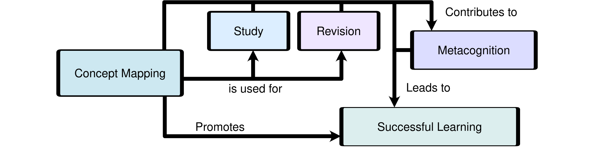

Grad-Students Draw Concept Maps with AI: A Qualitative Study in Progress
Noah S. Kevy ORCID: 0009-0008-2469-1500
California State University Monterey Bay, Seaside CA 93955, USA
nkevy@csumb.edu
Abstract
Concept mapping, originally developed in the 1970s, progressed as researchers and practitioners alike integrated computer programs with this elaborative instructional technique. The emergence of generative artificial intelligence (GAI) has presented an opportunity to continue in this tradition. Clearly, the use of GAI could become a barrier to learning if students were to use it to avoid the elaboration or recall of their subject matter, a possibility to be avoided. This study, which is a work in progress, will leverage e-learning and GAI to guide about 35 graduate students through the act of concept mapping. The study was undertaken in order to explore students’ experiences of concept mapping with GAI during an online course on Instructional Technology. A thematic analysis of mixed survey data and semi-structured interviews will be conducted, and results will be crafted into stories or narratives, which characterize the student experience. A guided discovery approach to teaching concept mapping has been well-established, but the use of GAI has not, representing an opportunity to inform future pedagogical decisions.
Keywords: Human-AI Collaboration, Concept Mapping, Graduate Education.
1 Introduction
1.1 Background
While the disciplines of Instructional Design and Education have long been entangled, in the last few years, there has been a call for intentional collaboration on long-standing social problems [22]. Problems, like limited opportunity or the frustration of student success [22], change over time. Often, the clarification of such problems inspires innovative instruction, non-instructional solutions, and systemic change [30]. This study contributes to the further development of an innovative instructional technique.
At California State University Monterey Bay (CSUMB), concept mapping was an underused instructional technique. The master’s program in Instructional Science and Technology (MIST) has been providing instruction on the use of multimedia for instructional design. However, none of the MIST courses provided a lesson on how to make a concept map. For students, concept mapping is an opportunity to organize their knowledge into a graphic or visual. Instructional techniques that exploit multiple representations of knowledge have been shown to be effective [28]. So it was felt that a short lesson on concept mapping would align with the objectives of instructional design education and would be a meaningful improvement to the MIST program.
The adoption of generative artificial intelligence (GAI) tools introduced a new problem. Traditionally, concept mapping has been used as an elaborative learning technique or during retrieval practice [2, 5]. But, clearly, the use of GAI is a barrier to learning if students use it to avoid elaboration or recall. Generally, teaching online limits the ability of an instructor to regulate the use of software, and today GAI tools are widely available. The solution, it seems, is old-school but the media are not. Because students can be guided through the act of making a concept map [25], GAI software can be used to guide the discovery of concept mapping. Also, participating in an activity that demonstrates how GAI can augment an instructional technique is particularly valuable for MIST students, who are emerging learning designers.
1.2 Review
Briefly, What’s a Concept Map? A concept map is a kind of graphic organizer [10], which uses words to convey information. Unlike a paragraph, a concept map leverages geometric syntax (e.g., lines and shapes); see Figure 1. Concept maps are compositions of a few basic elements: Concepts (often nouns or noun phrases) are related together by linking words (often verbs or verb phrases). These elements combine to create short statements known as propositions. Concepts, relationships and propositions are essential; however, the color, content, size and shape of a concept map may vary [25].

Shape, Size, and Structure. In the classroom context, small highly connected concept maps are more useful than large hierarchical ones. Students may make a big concept map just to satisfy expectations [7], and extra information tends to reduce clarity and readability [1, 7]. For the concept mapper, the shape of a concept map matters less than the act of concept mapping itself [4]. Still, even simple concept maps should display a high degree of connectedness, a sign of meaningful learning [18]. To emphasize clarity, an instructor might simply ask for a number of small concept maps. In fact, specifying an exact number of concepts and relationships might ease implementation. While it’s arbitrary, the alternative requires that students understand the concept of connectedness, perhaps recognizing that the minimum number of relationships for a circular concept map is the same as the number of concepts. As an aside, the maximum is (n2-n) the quantity divided by two, where n is the number of concepts—if only one relationship may connect two concepts. Given the literature on working memory [13], specifying between 3 and 9 concepts is reasonable.
Technological Support. Even though technology is readily available, instructional designers and instructors must think carefully about augmenting concept mapping activities [3, 33]. Technology has long been used to support concept mapping; for example, computer programs have been used to design templates and scaffold learners’ use of hierarchical structure [14, 24]. Of late, GAI programs have been used to generate concept maps [26]. But many have expressed concerns about ethics and quality results. Jeanne B. Law (2025) addressed both concerns by defining a multi-part prompting protocol, the Rhetorical Prompting Method. Learners start by clearly defining success [19], and they conclude by “reflecting on the advantages and drawbacks” of GAI utilization [23].
1.3 Research Questions
The purpose of this research is to explore students’ perceptions of an augmented, guided discovery approach to teaching concept mapping in an instructor-led, blended learning environment. The study asks two questions about the students' experiences after they engage with an asynchronous e-learning product.
RQ1. What are graduate students’ perceptions of using generative artificial intelligence for concept mapping in a course on instructional technology?
RQ2. How do graduate students describe their experience of creating size-constrained concept maps?
2 Materials and Method
2.1 An E-Learning Product
Students’ experiences of concept mapping with GAI will be informed by their engagement with a micro e-learning product, named “Making Concept Maps.” The micro-course aligns with the policies of CSUMB, being that it has been developed with Articulate Rise 360 and will be delivered in Canvas, a Learning Management System. The design strives to overcome common “barriers to learning” [28], and it leverages multimedia design principles to facilitate cognitive processing [10]. However, all content is in English and audio-only concept mapping, unfortunately, is out of scope. The instructor and researchers will address concerns if they arise.
As has been mentioned, the micro-course will guide graduate students through the act of concept mapping. The micro-course has three parts. 1. Students are taught to classify diagrams. 2. Students are taught to read concept maps. 3. Students are taught a three-phase procedure: concept generation, proposition construction, and concept map generation. The micro-course will provide instructional content along with assets and prompts for cloud-based GAI software.
Well-known instructional theories guided the design of this micro-course. Initially, students encounter learning outcomes and rationale for learning [31]. Then students discriminate between examples (of concept maps) and non-examples [21]. In the third part, GAI is conceptualized as a knowledgeable other and utilized alongside a scaffold. Students will be operating in a zone of proximal development, and thus benefit from procedural or process growth [8]. In addition, the results of students’ collaboration with GAI will be reflected upon and reviewed by their peers using an online discussion forum [32].
Instead of requesting a concept map, students collaborate with GAI to generate concepts. They select and organize concepts, then prompt GAI to generate a variety of propositional structures. Finally, the selected propositions are converted to scalable vector graphics (SVG) by GAI, a format which allows students to continue editing. By emphasizing drafting, peer-review and revision, concept mapping becomes an iterative, collaborative process.
2.2 Participants
The sample population will be composed of 35 graduate students, enrolled in Instructional Technology during their fall semester at CSUMB. The sample population is not expected to know much about concept mapping, and demographic information is not yet known; this data will be collected during an initial survey. Students will be informed and asked, but not required, to participate. However, all students will engage with the micro-course and make concept maps with GAI.
2.3 Research Design
Data will be collected during the fall of 2026-2027. Because research will be conducted on a required educational activity, there is minimal risk, and the institutional review board is expected to assign exempt status. Owing to the single sample population, the design is best thought of as a case study. Its primarily qualitative methodology will employ strategies from thematic analysis and narrative inquiry.
Procedure. The study consists of primarily qualitative surveys. Yet some students may participate in semi-structured interviews. Surveys inquire about two relevant instructional activities, occurring before and after students engage with these activities: First, students will engage with a micro-course. Second, students apply their knowledge, creating three concept maps, one each about Behaviorism, Cognitivism, and Constructivism. Both hyperlinks to Qualtrics surveys and the two activities will be posted in Canvas. Follow-up interviews will be hosted on Zoom in a timely manner. Also, students will voluntarily upload their concept maps to Qualtrics so that these artifacts can be included in the study. All students will receive corrections and/or confirmation on their concept maps.
Data Analysis. The results will be one or more common narratives, which might be called hypothetical student experiences. Three kinds of evidence, representative concept maps, descriptive statistics, and quotations will support these narratives. Concept maps will be assessed using a rubric, measuring gross taxonomy, structural integrity, and link quality [12, 18], yielding a score out of 40 points per map. Interviews, if any, will be digitally transcribed [6]. Transcripts and survey responses will be analyzed using an open or inductive thematic analysis [11]. Afterwards, individual narratives will be constructed by organizing the themes that are present in a student’s experience along a temporal axis, which resembles a three-act narrative structure, a beginning, middle and end [27]. One or more common narratives will be synthesized by comparing and asking questions, such as which themes are common at a particular point in the three-act narrative structure.
3 Discussion
3.1 Limitations
The results will only be valid when used to predict student experiences under specific conditions. Sampling bias, along with other additive and interactive effects, will significantly limit generalization. For example, because surveys will be self-reported, there will be response bias in the data. As well, interview data may suffer from response bias; yet only one interviewer will be used, reducing any interviewer effect. Also, using both interviews and surveys will allow researchers to cross-check their conclusions [17]. Concept maps are likely to represent the particular views of the concept mapper [15]; as a result, the sample of concept maps will create the same limitations as did the sample of participants.
3.2 Implications
Future graduate students in MIST, who make concept maps with GAI, may have similar experiences to those described in the study. Opinions may vary on multiple dimensions: from positive to negative, from useful to not useful. This study will discover what these dimensions might be and situate these opinions within a narrative description of the act of concept mapping. It is possible that some of the findings will implicate the general use of GAI software. The study may corroborate or refute the usefulness of the generate, monitor, apply and evaluate framework [20]. Or results may reveal negative feelings, like antipathy, inefficacy or fear, which reflect aspects of resistance to GAI [16]. Doubtless, the results have implications for future concept mapping activities: Students may alter the three-phase concept mapping procedure, for example. Of particular interest, the findings have implications for adoption or rejection. In other words, if the student experience is overwhelmingly positive, students may find they want to make more concept maps.
Author Contributions
Noah S. Kevy is the sole author and is responsible for this article in its entirety.
Competing Interests
The author declares no competing interests.
References
- Abrams, R.: An Overview of Concept Mapping. In: Abrams R., Iuli R., Kothe, D.A. (eds.) Collaborative Literature Review of Concept Mapping. The Meaningful Learning Research Group. https://www.mlrg.org/clr-conceptmapping.html, last accessed 2026/5/21.
- Adesope, O.O., Nesbit, J.C., Sundararajan, N.: The Mapping Principle in Multimedia Learning. In: Mayer, R.E., & Fiorella, L. (eds.) The Cambridge Handbook of Multimedia Learning, pp. 351-359. 3rd edn. Cambridge University Press, Cambridge (2022)
- Allen, M.: The Successive Approximation Model. In: Reiser, R., Carr-Chellman, A., Dempsey, J. (eds.) Trends and Issues in Instructional Design and Technology, pp. 15-37. 5th edn. Routledge, New York (2025)
- Bamidele, E.F., Oloyede, E.O.: Comparative Effectiveness of Hierarchical, Flowchart and Spider Concept Mapping Strategies on Students’ Performance in Chemistry. World Journal of Education 3(1), 66–76 (2013). doi: 10.5430/wje.v3n1p66
- Blunt, J.R., Karpicke, J.D.: Learning with retrieval-based concept mapping. Journal of Educational Psychology 106(3), 849–858 (2014). doi: 10.1037/a0035934
- Bokhove, C., Downey, C.: Automated Generation of ‘Good Enough’ Transcripts as a First Step to Transcription of Audio-Recorded Data. Methodological Innovations, 11(2), (2018). doi: 10.1177/2059799118790743
- Cañas, A.J., Reiska, P., Novak, J.D.: Is My Concept Map Large Enough? In: Cañas, A.J., Reiska, P., Novak, J.D. (eds.) Innovating with Concept Mapping. CMC 2016, vol. 635, pp. 128-143. Springer, Cham. (2016). doi: 10.1007/978-3-319-45501-3_10
- Campbell, L.O.: Learner Development Through Serial Concept Mapping. Knowledge Management & E-Learning 14(2), 170-185 (2022)
- Chan, Y., Yang, J.C.: Concept Mapping in Computer Supported Learning Environments: A Bibliometric Analysis. Interactive Learning Environments 31(10), 6678-6695 (2023)
- Clark, C.R., Mayer, E.R.: E-Learning and The Science of Instruction. 5th edn. Wiley, Hoboken, NJ (2023)
- Corbin, J., Strauss A.: Basics of Qualitative Research: Techniques and Procedures for Developing Grounded Theory. 4th edn. Sage, Thousand Oaks, CA (2015)
- Correia, R.M., Aguiar, J.G.: The role of worked examples to teach concept mapping. Journal for Educators, Teachers and Trainers 10(1), 67–83 (2019)
- Cowan, N.: The magical mystery four: How is working memory capacity limited, and why? Current Directions in Psychological Science 19(1), 51–57 (2010)
- Davies, M.: Concept Mapping, Mind Mapping and Argument Mapping: What are the differences and do they matter? Higher Education 62(3), 279–302 (2011)
- Edwards, J., Fraser, K.: Concept Maps as Reflectors of Conceptual Understanding. Research in Science Education 13, 19–26 (1983)
- Golgecia, I., Ritala, P., Arslan, A., McKenna, B., Ali, I.: Confronting and Alleviating AI Resistance in the Workplace: An integrative review and a process framework. Human Resource Management Review 35(2), (2025). doi:10.1016/j.hrmr.2024.101075
- Johnson, R.B., Christensen, L.: Educational Research: Qualitative, Quantitative, and Mixed Methods Approaches. 7th edn. Sage, Thousand Oaks, CA (2020)
- Kinchin, I.M.: If concept mapping is so helpful to learning biology, why aren’t we all doing it? International Journal of Science Education 23(12), 1257–1269 (2001). doi:10.1080/09500690010025058
- Law, J.B.: Before the paragraph, after the prompt: Collaborative Invention with Generative AI. In: Schnitzler, C., Vee, A., Laquintano, T. (eds.) TextGenEd: Continuing Experiments. The WAC Clearinghouse (2025). doi:10.37514/TWR-J.2024.2.1.01
- Liu, J., Li, S., Dong, Q.: Collaboration with Generative Artificial Intelligence: An exploratory study based on learning analytics. Journal of Educational Computing Research 62(5), 1014–1046 (2024). doi:10.1177/07356331241242441
- Merrill, D.M.: You Only Need Three Crayons. In: Reiser, R., Carr-Chellman, A., Dempsey, J.V. (eds.) Trends and Issues in Instructional Design and Technology. 5th edn., pp. 54–66. Routledge, New York (2025)
- Moore, S., Stefaniak, J., Reeves, T.C.: The Research We Need: Barriers, methodologies, and strategic planning for an educational technology and instructional design research agenda. Journal of Computing in Higher Education 37, 497–506 (2025). doi:10.1007/s12528-025-09457-1
- Morrison, G.: Can an AI do that? In: Schnitzler, C., Vee, A., Laquintano, T. (eds.) TextGenEd: Continuing Experiments. The WAC Clearinghouse (2025). doi:10.37514/TWR-J.2024.2.1.01
- Novak, J.D.: Meaningful Learning: The essential factor for conceptual change in limited or inappropriate propositional hierarchies leading to empowerment of learners. Science Education 86(4), 548–571 (2002)
- Novak, J.D., Gowin, D.B.: Learning How to Learn. Cambridge University Press, Cambridge (1984)
- Perin, W.A., Cury, D., Aguiar, C.Z., Menezes, C.S.: From Text to Maps: Concept map generation using fine-tuned large language model. Congresso Brasileiro de Informática na Educação 34, 1317–1328 (2023). doi:10.5753/sbie.2023.234749
- Rozario, S.Y., Lazarus, M.D., Sarkar, M., Farlie, M.K.: Narrative inquiry for beginners: A practical guide for health professions education researchers. Anatomical Sciences Education 19, 242–253 (2026). doi:10.1002/ase.70105
- Sewell, A., Kennett, A., Pugh, V.: Universal design as a theory of inclusive practice for use by educational psychologists. Educational Psychology in Practice 38(4), 364–378 (2022). doi: 10.1080/02667363.2022.2111677
- Skinner, E.F., Richardson, R.C.: Making It in a Majority University: The minority graduate’s perspective. Change 20(3), 34–35, 38–42 (1988). https://www.jstor.org/stable/40164643
- Stefaniak, J.E., Badgy, L.: The role of human performance technology in learning design. In: Reiser, R., Carr-Chellman, A., Dempsey, J.V. (eds.) Trends and Issues in Instructional Design and Technology. 5th edn., pp. 469–482. Routledge, New York (2025)
- Stolovitch, H.D., Keeps, E.J.: Telling Ain’t Training. 2nd edn. Association for Talent Development, Alexandria, VA (2011)
- Vaughan, N.D., Dell, D., Cleveland-Innes, M., Garrison, D.R.: Principles of Blended Learning: Shared Metacognition and Communities of Inquiry. AU Press, Athabasca, AB (2023)
- Wang, A.I., Aanesl, A., Gamnes, V.: Three social classroom applications to improve student attitudes. Education Research International 1, (2014). doi:10.1155/2014/259128